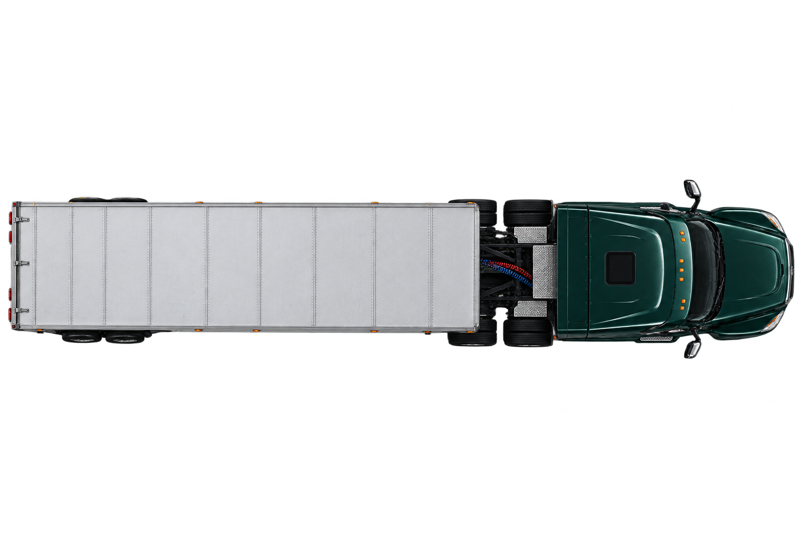

Illustrative workflow
The problem we are building for
Not Route Proof output
Route Proof today reads one historical source per run
The problem we are building for
Not Route Proof output
Route Proof today reads one historical source per run

Records
Consolidated operating record
| Vehicle | Date | Source | Distance | Fuel | Event |
|---|---|---|---|---|---|
| UNIT-014 | 14 AUG | TELEMATICS | 184.2 MI | — | TRIP |
| UNIT-014 | 14 AUG | FUEL CARD | — | 62.4 L | FUEL |
| UNIT-027 | 14 AUG | MAINTENANCE | — | — | SERVICE |
| UNIT-031 | 15 AUG | TELEMATICS | 96.8 MI | — | TRIP |
Somebody checks this by hand
Telematics exportAB12 CDE14 AUG184.2 MI
Fuel card exportAB12CDE14 AUG62.4 L
Same vehicle?Somebody still has to decide.
Illustrative
Records support decisions
FinancialPay / challenge an invoice
OperationalRepair / investigate / schedule
Sustainability / capitalReport fuelReplace an assetJustify investment